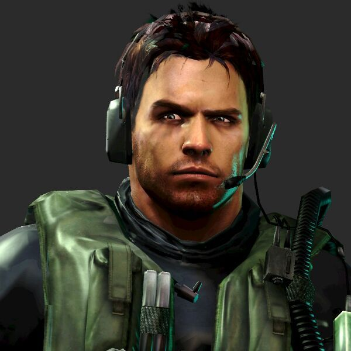
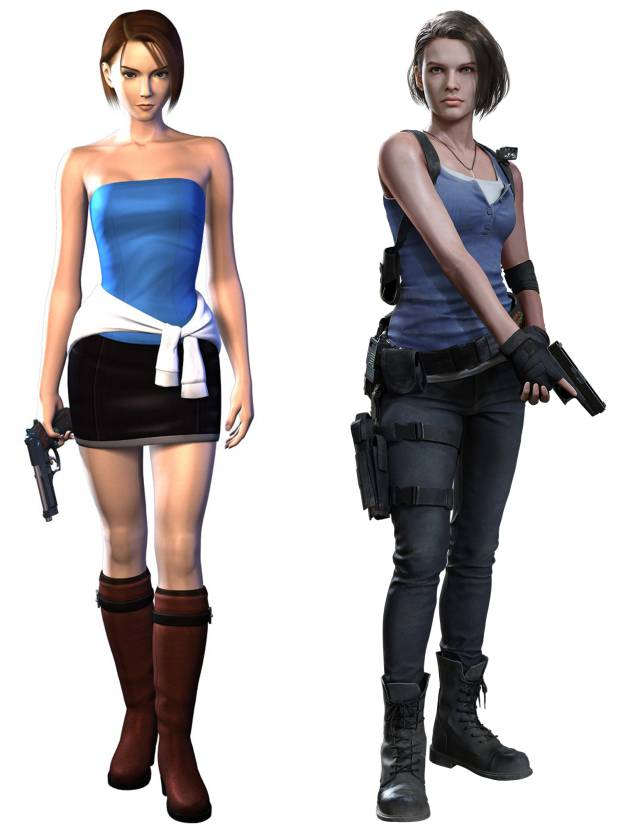
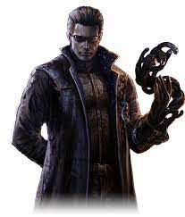

Una saga creada por Capcom
|  |
Chris Redfield en un Agente de Operaciones Especiales (SOA) americano, también Capitán de la Unidad de Operaciones Especiales (SOU) de la Alianza de Evaluación de Seguridad de Bioterrorismo (B.S.A.A.), de la cual es un miembro de fundación, junto con su antigua compañera, Jill Valentine |
|  |
Jill Valentine es un agente estadounidense de Operaciones Especiales (SOA) de la Alianza de Evaluación de Seguridad contra el Bioterrorismo (BSSA), de la que es co-fundadora junto a Chris Redfield y una de los once miembros originales, haciendo de ella una agente de rango alto y respetada de la organización. |
|  |
Albert Wesker fue un hombre hambriento de poder, conocimiento y astucia infinita, alguien que buscaba el poder y el dominio sobre toda la raza humana, todo para su propio beneficio. Con este fin, estaba afiliado a la Corporación Umbrella, como uno de sus investigadores más prometedores, y al mismo tiempo participó en actividades ilícitas por ir encubierto como un oficial de la R.P.D. y el líder de S.T.A.R.S. en Raccoon City. |